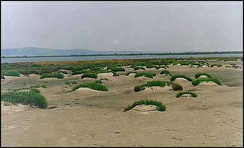
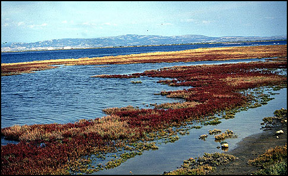
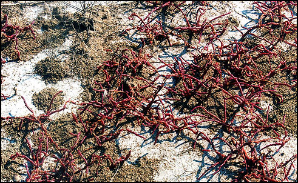

|
Αλοφυτική - ημιαλοφυτική βλάστηση |
|
|
Salicornia europaea |
Αρμυρίθρα |
|
Salicornia radicans |
Αρμυρίθρα |
|
Suaeda maritima |
- |
|
Suaeda splendens |
- |
|
Puccinellia festuciformis |
- |
|
Halimione portulacoides |
- |
|
Arthrocnemum fruticosum |
Αρμύρα |
|
Arthrocnemum glaucum |
Αρμύρα |
|
Halocnemum strobilaceum |
- |
|
Aeluropus litoralis |
- |
|
Limonium gmelinii |
- |
|
Limonium bellidiflorum |
- |
|
Artemisia monogyna |
-- |
Η αλοφυτική βλάστηση η οποία αναπτύσσεται στις εκτάσεις του Δέλτα που επηρεάζονται από το θαλασσινό νερό, δείχνει μεγάλη ποικιλομορφία και αποτελεί έκφραση των διακυμάνσεων υγρασίας, αλατότητας και των επιμέρους ιδιαίτερων μορφολογικών χαρακτηριστικών του εδάφους.
Τα φυτά αυτά, τα αλόφυτα, σχηματίζουν χαλαρές συνθέσεις βλάστησης που εκφράζουν κατά εκπληκτικό τρόπο τις ιδιαιτερότητες κάθε εδαφικού τμήματος. Εάν εξετάσουμε την εξάπλωσή τους στο χώρο του Δέλτα τότε τα αλόφυτα μπορούν να διακριθούν σε δύο σαφείς ζώνες:
α) Μία ζώνη παραλιακή, άμεσα επηρεαζόμενη από την θάλασσα που καταλαμβάνει 480 ha και είναι συχνά κατακλυζόμενη.
β) Μία άλλη ξηρή ζώνη η οποία επηρεάζεται έμμεσα από το θαλασσινό νερό, από τον υπόγειο υδροφόρο ορίζοντα, στην εσωτερική περιοχή του δέλτα. Η ζώνη αυτή περικλείεται από τα κανάλια και καλύπτει 940 ha περίπου.
`Ετσι στις χαμηλές ιλυώδεις θέσεις που επηρεάζονται άμεσα από το θαλασσινό νερό, αναπτύσσονται είδη του γένους Salicornia sp.(Salicornia europaea, Salicornia radicans ), η κοινή αρμυρίθρα. Το είδος αυτό συγκρατεί την ιλύ και βοηθά στον σχηματισμό νέων εδαφών. Επίσης εμφανίζονται τα είδη: Arthrocnemum fruticosum, Arthrocnemum glaucum, Halimione portulacoides, Limonium gmelinii, Limonium bellidifolium κ.ά.
Στις υψηλότερες και επίπεδες εκτάσεις της ζώνης αυτής εμφανίζονται και διάφορα αγρωστώδη όπως τα Puccinellia festuciformis και Pholiurus incurvatus τα οποία δίνουν την εμφάνιση λειμώνων.
Σε ορισμένες θέσεις λόγω της διάβρωσης του αμμώδους εδάφους από κινούμενα νερά δημιουργούνται χαρακτηριστικά συγκροτήματα αμμοθινών με αλόφυτα και προσκεφαλαιόμορφη ανάπτυξη (Νήσος Ασάνη).
Σε βαλτώδεις περιοχές και σε μεγάλη έκταση ανάμεσα στη λιμνοθάλασσα Λακί και τον ποταμό `Εβρο επικρατεί το είδος Halimione portulacoides ενώ μεγάλες εκτάσεις καλύπτονται αποκλειστικά από το είδος Salicornia europaea.
Όλες αυτές οι εκτάσεις των αλατούχων εδαφών διασχίζονται από κανάλια και αυλάκια ή μικρές λεκάνες αλμυρών νερών δημιουργώντας εντυπωσιακούς αλμυρόβαλτους (Φωτο) και σημαντικούς βιοτόπους για την ιχθυοπαραγωγή και την ορνιθοπανίδα. Σε περιοχές στο εσωτερικό τμήμα του δέλτα όπου υπάρχει αυξημένη αλατότητα και έντονη ξηρασία, χαρακτηριστικά που γίνονται ορατά από τα λευκά επανθίσματα αλατιού στην επιφάνεια του ξηρού εδάφους και από τον κατατεμαχισμό του, συναντούμε την φυτοκοινωνία Halocnemum strobilaceum. Tο είδος αυτό προέρχεται από τις αλατούχες στέππες της νότιας Ρωσσίας και της ανατολικής Τουρκίας, όπου είναι πολύ διαδεδομένο ενώ η εμφάνισή του στις αλοφυτικές διαπλάσεις της Μεσογείου είναι σπάνια.
Στο δυτικό τμήμα του δέλτα πίσω από τη ζώνη της αμμόφιλης βλάστησης υπάρχουν αλοφυτικές φυτοκοινωνίες με τα είδη Juncus maritimus,Juncus gerardii,Aeluropus litoralis και Suaeda maritima.
 Οι αλοφυτικές φυτοκοινωνίες του Δέλτα Έβρου είναι από τις μεγαλύτερες σε έκταση στην Ελλάδα.Υπάρχουν ακόμη αδιατάρακτες κοινωνίες σ`όλη την έκταση των ακτών και των λιμνοθαλασσών.
Οι αλοφυτικές φυτοκοινωνίες του Δέλτα Έβρου είναι από τις μεγαλύτερες σε έκταση στην Ελλάδα.Υπάρχουν ακόμη αδιατάρακτες κοινωνίες σ`όλη την έκταση των ακτών και των λιμνοθαλασσών.
Ο οικολογικός τους ρόλος είναι ιδιαίτερα σημαντικός γιατί:

